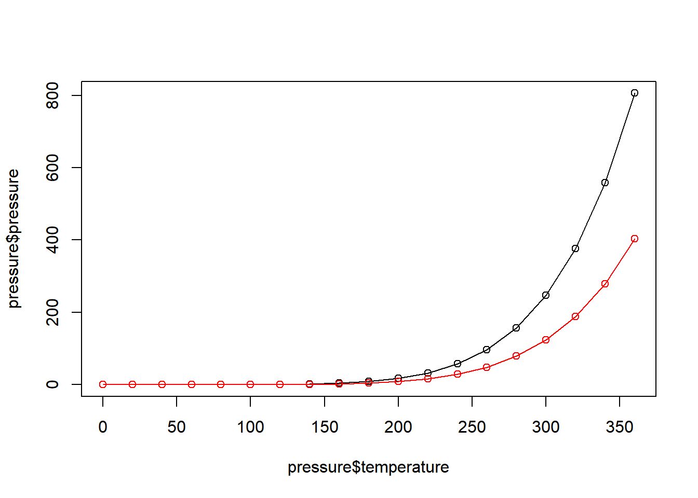
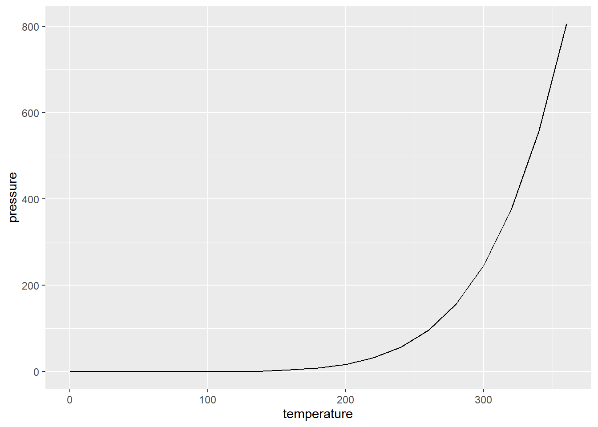

Chapter 2 Probability and Simulation
Optional Reading: R Cookbook Ch8
2.1 Probability Distributions
Using the normal distribution as an example:
| Function | Purpose |
|---|---|
dnorm |
Normal density |
pnorm |
Normal CDF |
qnorm |
Normal quantile function |
rnorm |
Normal random variables |
Examples
Density of \(N(2, 3^2)\) at \(5\).
dnorm(5, mean = 2, sd = 3)
## [1] 0.08065691\(P(X \leq 3)\), where \(X \sim N(2, 3^2)\)
pnorm(3, mean = 2, sd = 3)
## [1] 0.6305587
# "mean =" and "sd =" are optional
pnorm(3, 2, 3)
## [1] 0.6305587Generate 10 random variables, each follows \(N(3, 4^2)\).
rnorm(10, 3, 4)
## [1] 2.491869 5.166051 -5.381980 2.465636 3.555291 -0.314179
## [7] 1.557141 8.639548 2.597927 4.54719995th percenttile of \(N(0, 1)\). Find \(q\) such that \(P(Z \leq q) = 0.95\)
qnorm(0.95, 0, 1)
## [1] 1.644854Plotting the normal density
x <- seq(-4, 4, by = 0.1)
plot(x, dnorm(x), type = "l", main = "Density of N(0,1)") # "l" for lines
2.1.1 Common Distributions
| Discrete distribution | R name | Parameters |
|---|---|---|
| Binomial | binom |
n = number of trials; p = probability of success for one trial |
| Geometric | geom |
p = probability of success for one trial |
| Negative binomial (NegBinomial) | nbinom |
size = number of successful trials; either prob = probability of successful trial or mu = mean |
| Poisson | pois |
lambda = mean |
| Continuous distribution | R name | Parameters |
|---|---|---|
| Beta | beta |
shape1; shape2 |
| Cauchy | cauchy |
location; scale |
| Chi-squared (Chisquare) | chisq |
df = degrees of freedom |
| Exponential | exp |
rate |
| F | f |
df1 and df2 = degrees of freedom |
| Gamma | gamma |
rate; either rate or scale |
| Log-normal (Lognormal) | lnorm |
meanlog = mean on logarithmic scale; sdlog = standard deviation on logarithmic scale |
| Logistic | logis |
location; scale |
| Normal | norm |
mean; sd = standard deviation |
| Student’s t (TDist) | t |
df = degrees of freedom |
| Uniform | unif |
min = lower limit; max = upper limit |
To get help on the distributions:
?dnorm
?dbeta
?dcauchy
# the following distributions need to use different code
?TDist
?Chisquare
?LognormalExamples (Using Binomial as an Example)
dbinom(2, 10, 0.6) # p_X(2), p_X is the pmf of X, X ~ Bin(n=10, p=0.6)
## [1] 0.01061683
pbinom(2, 10, 0.6) # F_X(2), F_X is the CDF of X, X ~ Bin(n=10, p=0.6)
## [1] 0.01229455
qbinom(0.5, 10, 0.6) # 50th percentile of X
## [1] 6
rbinom(4, 10, 0.6) # generate 4 random variables from Bin(n=10, p=0.6)
## [1] 9 6 7 9
x <- 0:10
plot(x, dbinom(x, 10, 0.6), type = "h") # "h" for histogram like vertical lines
2.1.2 Exercises
- The average number of trucks arriving on any one day at a truck depot in a certain city is known to be 12. Assuming the number of trucks arriving on any one day has a Poisson distribution, what is the probability that on a given day fewer than 9 (strictly less than 9) trucks will arrive at this depot?
ppois(8, 12)
## [1] 0.1550278- Let \(Z \sim N(0, 1)\). Find \(c\) such that
- \(P(Z \leq c) = 0.1151\)
qnorm(0.1151)
## [1] -1.199844- \(P(1\leq Z \leq c) = 0.1525\)
c <- qnorm(pnorm(1) + 0.1525) # draw a graph
# test the answer
pnorm(c) - pnorm(1)
## [1] 0.1525- \(P(-c \leq Z \leq c) = 0.8164\).
# P(0 <= Z <= c) = 0.8164/2
# P(Z <= c) = 0.8164/2 + 0.5
c <- qnorm(0.8164 / 2 + 0.5)
# test our answer
pnorm(c)- pnorm(-c)
## [1] 0.8164- Plot the density of a chi-squared distribution with degrees of freedom \(4\), from \(x=0\) to \(x=10\).
- Find the 95th percentile of this distribution.
# note that a chi-squared r.v. is nonnegative
x <- seq(0, 10, by = 0.1)
plot(x, dchisq(x, df = 4), type = "l")
qchisq(0.95, df = 4)
## [1] 9.487729- Simulate \(10\) Bernoulli random variables with parameter \(0.6\).
# Bernoulli(p) = Bin(1, p)
rbinom(10, size = 1, prob = 0.6)
## [1] 1 1 1 1 1 1 0 0 0 0- Plot the Poisson pmf with parameter \(2\) from \(x = 0\) to \(x = 10\).
x <- 0:10
plot(x, dpois(x, 2), type = "h")
- Draw a plot to illustrate that the 97.5th percentile of the t distribution will be getting closer to that of the standard normal distribution when the degrees of freedom increases.
x <- 10:200
plot(x, qt(0.975, df = x), type = "l", ylim = c(1.9,2.3))
# add a horizontal line with value at qnorm(0.975)
# lty = 2 for dashed line, check ?par
abline(h = qnorm(0.975), lty = 2) 
# Therefore, for a large sample, t-test and z-test will give you similar result.2.2 Simulation
We have already seen how to use functions like
runif,rnorm,rbinomto generate random variables.R actually generates pseudo-random number sequence (deterministic sequence of numbers that approximates the properties of random numbers)
The pseduo-random number sequence will be the same if it is initialized by the same seed (can be used to reproduce the same simulation results or used to debug).
# every time you run the first two lines, you get the same result
set.seed(1)
runif(5)
## [1] 0.2655087 0.3721239 0.5728534 0.9082078 0.2016819
# every time you run the following code, you get a different result
runif(5)
## [1] 0.89838968 0.94467527 0.66079779 0.62911404 0.06178627Sampling from discrete distributions
Usage of sample:
sample(x, size, replace = FALSE, prob = NULL)
See also ?sample.
sample(10) # random permutation of integers from 1 to 10
## [1] 3 1 5 8 2 6 10 9 4 7
sample(10, replace = T) # sample with replacement
## [1] 5 9 9 5 5 2 10 9 1 4
sample(c(1, 3, 5), 5, replace = T)
## [1] 5 3 3 3 3
# simulate 20 random variables from a discrete distribution
sample(c(-1,0,1), size = 20, prob = c(0.25, 0.5, 0.25), replace = T)
## [1] -1 1 1 -1 0 0 1 1 0 -1 0 0 0 0 0 1 1 0 -1 0Example: Suppose we have a fair coin and we play a game. We flip the coin. We win $1 if the result is head and lose $1 if the result is tail. You play the game 100 times. You are interested in the cumulative profit.
set.seed(1) # R actually generates pseudo random numbers
# setting the seed ensure that each time you will get the same result
# for illustration, code debugging, reproducibility
profit <- sample(c(-1, 1), size = 100, replace = T)
plot(cumsum(profit), type = "l")
set.seed(2)
profit <- sample(c(-1, 1), size = 100, replace = T)
plot(cumsum(profit), type = "l")
Example: You have two dice \(A\) and \(B\). For die \(A\), there are \(6\) sides with numbers \(1,2,3,4,5,6\) and the corresponding probability of getting these values are \(0.1,0.1,0.1,0.1,0.1,0.5\). For die \(B\), there are \(4\) sides with numbers \(1,2,3,7\) and the corresponding probability of getting these values are \(0.3,0.2,0.3,0.2\). You roll the two dice independently. Estimate \(P(X > Y)\) using simulation, where \(X\) is the result from die \(A\) and \(Y\) is the result from die \(B\).
n <- 10000 # number of simulations
X <- sample(1:6, size = n, replace = TRUE, prob = c(0.1, 0.1, 0.1, 0.1, 0.1, 0.5))
Y <- sample(c(1, 2, 3, 7), size = n, replace = TRUE, prob = c(0.3, 0.2, 0.3, 0.2))
mean(X > Y)
## [1] 0.6408Why the sample mean approximates the required probability? Recall the strong law of large numbers (SLLN). Let \(X_1,\ldots,X_n\) be independent and identically distributed random variables with mean \(\mu:=E(X)\). Let \(\overline{X}_n:= \frac{1}{n} \sum^n_{i=1}X_i\). Then
\[\overline{X}_n \stackrel{a.s.}{\rightarrow} \mu.\]
Note: a.s. means almost surely. The above convergence means \(P(\lim_{n\rightarrow \infty} \overline{X}_n = \mu) = 1\). Note that (the expectation of an indicator random variable is the probability that the corresponding event will happen)
\[ P(X>Y) = E(I(X>Y)).\]
To apply SLLN, we just need to recognize the underlying random variable is \(I(X>Y)\). Then, with probability \(1\), the sample mean
\[ \frac{1}{n} \sum^n_{i=1} I(X_i > Y_i) \rightarrow P(X>Y).\]
The quantity on the LHS is what we compute in mean(X>Y) (note that we are using vectorized comparison).
Another Simulation Example
A simple model on the stock return assumes that (i)
\[r_{t+1} := \log \frac{P_{t+1}}{P_t} \sim N(\mu,\sigma^2), \]
where \(r_{t+1}\) is the log-return at Day \(t+1\), \(P_t\) is the stock price at the end of Day \(t\); (ii) \(r_1,r_2,\ldots\) are iid. Simple algebra shows that \[P_{t+1} = P_t e^{r_{t+1}}.\] Applying the above equation repeatedly, we have
\[P_{t+1} = P_{t-1}e^{r_{t+1}} e^{r_t} = \ldots = P_0 e^{r_{t+1}} e^{r_t} \cdots e^{r_1} = P_0 e^{ \sum^{t+1}_{i=1} r_i}.\]
Suppose that the current price of a certain stock \(P_0\) is \(100\), \(\mu = 0.0002\) and \(\sigma = 0.015\). Using simulation, estimate the probability that the price is below $95 at the close of at least one of the next 30 trading days.
no_sim <- 10000 # number of simulation
below <- rep(0, no_sim)
for (i in 1:no_sim) {
price <- 100 * exp(cumsum(rnorm(30, mean = 0.0002, sd = 0.015)))
below[i] <- min(price) < 95
}
mean(below)
## [1] 0.44722.3 Additional Exercises:
Ex 1
Let \(X \sim N(mean = 2, sd = 1)\), \(Y \sim Exp(rate = 2)\), \(Z \sim Unif(0, 4)\) (continuous uniform distribution on [0,4]). Suppose \(X, Y, Z\) are independent. Estimate \(P(\max(X,Y)>Z)\).
Recall the difference between pmax and max:
# always try with simple examples when you test the usage of functions
x <- c(1, 2, 3)
y <- c(0, 5, 10)
max(x, y)
## [1] 10
pmax(x, y)
## [1] 1 5 10Answer:
n <- 100000
x <- rnorm(n, 2, 1)
y <- rexp(n, 2)
z <- runif(n, 0, 4)
mean(pmax(x, y) > z)
## [1] 0.51278Ex 2
Let \(X \sim N(mean = 2, sd = 1)\), \(Y \sim Exp(rate = 2)\), \(Z \sim Unif(0, 4)\) (continuous uniform distribution on [0,4]). Suppose that \(X, Y, Z\) are independent. Estimate \(P(\min(X,Y)>Z)\).
n <- 100000
x <- rnorm(n, 2, 1)
y <- rexp(n, 2)
z <- runif(n, 0, 4)
mean(pmin(x, y) > z) # what is the difference between pmin and min?
## [1] 0.11386Ex 3
Let \(X \sim N(mean = 2, sd = 1)\), \(Y \sim Exp(rate = 2)\), \(Z \sim Unif(0, 4)\) (continuous uniform distribution on [0,4]). Suppose that \(X, Y, Z\) are independent. Estimate \(P(X^2 Y>Z)\).
n <- 100000
x <- rnorm(n, 2, 1)
y <- rexp(n, 2)
z <- runif(n, 0, 4)
mean(x ^ 2 * y > z)
## [1] 0.40801Ex 4
Person \(A\) generates a random variable \(X \sim N(2, 1)\) and Person \(B\) generates a random variable \(Z \sim Unif(0, 4)\). If \(X < Z\), Person \(A\) will discard \(X\) and generate another random variable \(Y \sim Exp(0.5)\). Find the probability that the number generated by \(A\) is greater than that by \(B\).
n <- 100000
greater <- rep(0, n)
for (i in 1:n) {
X <- rnorm(1, 2, 1)
Z <- runif(1, 0, 4)
if (X< Z) {
Y <- rexp(1, rate = 0.5)
greater[i] <- Y > Z
} else {
greater[i] <- 1 # 1 means A's no > B's no
}
}
mean(greater)
## [1] 0.63775Remark: you may find that the following code gives you almost the same answer. Why?
n <- 100000
x <- rnorm(n, 2, 1)
y <- rexp(n, 0.5)
z <- runif(n, 0, 4)
mean(pmax(x, y) > z)
## [1] 0.63977We will see additional simulation examples after we talk about some programming in R
There are many important topics that we will not discuss
- algorithms for simulating random variables
- inverse transform
- acceptance rejection
- Markov Chain Monte Carlo
- methods to reduce variance in simulation
- Control variates
- Antithetic variates
- Importance sampling